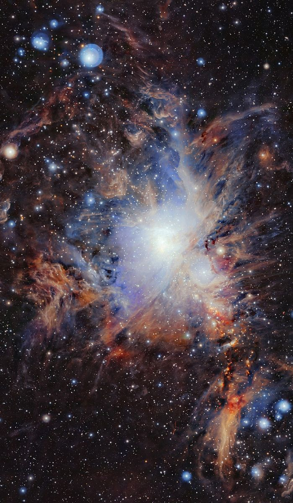
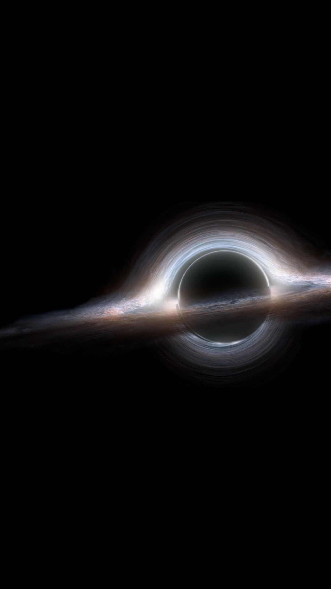
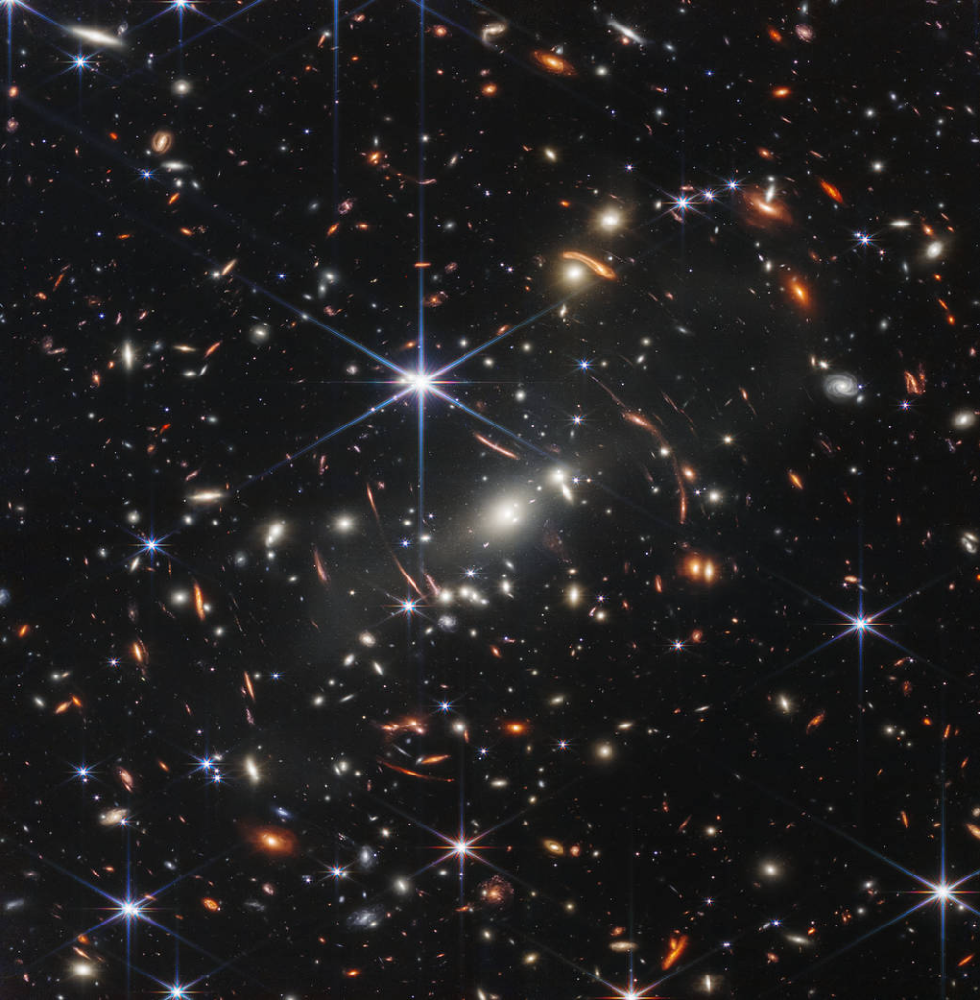

The universe is all of space and time[a] and their contents, including planets, stars, galaxies, and all other forms of matter and energy. The Big Bang theory is the prevailing cosmological description of the development of the universe. According to this theory, space and time emerged together 13.787±0.020 billion years ago,[11] and the universe has been expanding ever since the Big Bang. While the spatial size of the entire universe is unknown,[3] it is possible to measure the size of the observable universe, which is approximately 93 billion light-years in diameter at the present day. Some of the earliest cosmological models of the universe were developed by ancient Greek and Indian philosophers and were geocentric, placing Earth at the center. Over the centuries, more precise astronomical observations led Nicolaus Copernicus to develop the heliocentric model with the Sun at the center of the Solar System. In developing the law of universal gravitation, Isaac Newton built upon Copernicus's work as well as Johannes Kepler's laws of planetary motion and observations by Tycho Brahe. Further observational improvements led to the realization that the Sun is one of a few hundred billion stars in the Milky Way, which is one of a few hundred billion galaxies in the universe. Many of the stars in a galaxy have planets. At the largest scale, galaxies are distributed uniformly and the same in all directions, meaning that the universe has neither an edge nor a center. At smaller scales, galaxies are distributed in clusters and superclusters which form immense filaments and voids in space, creating a vast foam-like structure. Discoveries in the early 20th century have suggested that the universe had a beginning and that space has been expanding since then at an increasing rate.
|  |  |  |
What is black hole?
A black hole is a place in space where gravity pulls so much that even light can not get out. The gravity is so strong because matter has been squeezed into a tiny space. This can happen when a star is dying.
Because no light can get out, people can't see black holes. They are invisible. Space telescopes with special tools can help find black holes. The special tools can see how stars that are very close to black holes act differently than other stars.
Black holes can be big or small. Scientists think the smallest black holes are as small as just one atom. These black holes are very tiny but have the mass of a large mountain. Mass is the amount of matter, or "stuff," in an object. Another kind of black hole is called "stellar." Its mass can be up to 20 times more than the mass of the sun. There may be many, many stellar mass black holes in Earth's galaxy. Earth's galaxy is called the Milky Way. The largest black holes are called "supermassive." These black holes have masses that are more than 1 million suns together. Scientists have found proof that every large galaxy contains a supermassive black hole at its center. The supermassive black hole at the center of the Milky Way galaxy is called Sagittarius A. It has a mass equal to about 4 million suns and would fit inside a very large ball that could hold a few million Earths.
A black hole is one of the most mysterious and interesting objects in space. They are very dense objects. According to Einstein 's theory of relativity, the greater the density, the greater the gravity. Gravity is so strong that even light , which is said to be the fastest in the universe , cannot bounce back. [5] Black holes can never be seen because there is no light coming from them. But the nearby stars, The existence of a black hole can be detected through the characteristics of meteorites. The existence of black holes has been predicted since 1916 by Albert Einstein in his classic theory of general relativity . The term black hole was coined in 1967 by John Wheeler, an American astronomer, and the black hole was first discovered in 1971. If we are going to talk about black holes, we need to know about stars first. If the stars are dead, there are three possibilities. The first is a white dwarf called a white dwarf, which occurs when stars with a mass less than 1.2 times the mass of the sun die. They are called stars that are already protected from gravitational collapse by quantum forces that keep atoms from decaying. This limit of 1.2 times is called Chandrasekhar Limit. The second one is the Neutron Star. It occurs when stars between 1.2 and 3 times the mass of the Sun die. It is said to be caused by the forces that keep the nuclei of atoms from breaking apart, but it cannot be said exactly. This is because there is not much known about nuclear forces at very high densities. If stars with 3 times the mass of the Sun or more die, they become black holes. Since such stars exist in the universe, it can be said that there are already many black holes. Scientists once calculated that black holes could only come in two sizes: supermassive black holes and miniaturized black holes, but recent recalculations suggest that black holes may be intermediate in size. They are formed through chain attacks of star clusters. If these intermediate black holes were nearby, they could merge and fall to the center of the galaxy, forming more supermassive black holes. Black holes have such a strong gravity that everything in their vicinity is swallowed up, and even light cannot escape, so we will never see anything that goes into a black hole. They can communicate their presence through the characteristics around him. Space dust and gas continuously fall into the black hole with strong gravity, and the gas clouds and radiation from the stars on the edge of the black hole are only directed towards the black hole. A black hole can be divided into three layers. 'Outer Abyssal Boundary'; the inner boundary'; 'Singularity'. The horizon field is a flat plate that surrounds the black hole. It is also where light begins to lose its ability to escape. The gravitational force along the plane of the horizon is constant. Right in the center of the black hole, there is a point, and it is also the place where Hen Lin Pyi can be curved the most. It can be said that it is the place where all the weight of the entire black hole is concentrated. According to previous calculations, everything that enters a black hole is lost forever. But now, when some quantum mechanics is factored into the equation, quantum mechanics says that every particle has an antiparticle, so if a pair of antiparticles falls within the horizon of a black hole, one may be pulled in and devoured, but the other may be pushed away. As a result, the black hole shrinks and eventually decays. This event is not covered by classical mechanics. To this day, scientists are still trying to figure out how black holes behave.Small black holes are numerous and fascinating in the universe. But the great black hole, which can be called their great grandfather, rules the universe. Supermassive black holes are the core of galaxies, billions of times heavier than our Sun, and about the size of an average star. This is why the density is so great that the centers of galaxies cannot be seen. This is because the closer to the center the stars become denser, the more dense they become, obscuring the view on the other side of them. All the stars, including the Sun, revolve around the center of their respective galaxies. This means that there is a very.
The planet Earth is humans, A planet where animals and plants live. It is the third planet from the Sun. Earth has only one planetary moon. The Earth revolves around the Sun once every 365.2564 days, which is considered a year
Earth is the third planet from the Sun and the only place in the universe known to harbor life. While large volumes of water can be found throughout the Solar System, only Earth sustains liquid surface water. Approximately 70.8% of Earth's surface is made up of the ocean, dwarfing Earth's polar ice, lakes, and rivers. The remaining 29.2% of Earth's surface is land, consisting of continents and islands. Earth's surface layer is formed of several slowly moving tectonic plates, which interact to produce mountain ranges, volcanoes, and earthquakes. Earth's liquid outer core generates the magnetic field that shapes the magnetosphere of the Earth, deflecting destructive solar winds. The atmosphere of Earth consists mostly of nitrogen and oxygen. Greenhouse gases in the atmosphere like carbon dioxide (CO2) trap a part of the energy from the Sun close to the surface. Water vapor is widely present in the atmosphere and forms clouds that cover most of the planet. More solar energy is received by tropical regions than polar regions and is redistributed by atmospheric and ocean circulation. A region's climate is governed not only by latitude but also by elevation and proximity to moderating oceans. In most areas, severe weather, such as tropical cyclones, thunderstorms, and heatwaves, occurs and greatly impacts life. Earth is an ellipsoid with a circumference of about 40,000 km. It is the densest planet in the Solar System. Of the four rocky planets, it is the largest and most massive. Earth is about eight light minutes away from the Sun and orbits it, taking a year (about 365.25 days) to complete one revolution. The Earth rotates around its own axis in slightly less than a day (in about 23 hours and 56 minutes). The Earth's axis of rotation is tilted with respect to the perpendicular to its orbital plane around the Sun, producing seasons. Earth is orbited by one permanent natural satellite, the Moon, which orbits Earth at 380,000 km (1.3 light seconds) and is roughly a quarter as wide as Earth. Through tidal locking, the Moon always faces the Earth with the same side, which causes tides, stabilizes Earth's axis, and gradually slows its rotation. Earth, like most other bodies in the Solar System, formed 4.5 billion years ago from gas in the early Solar System. During the first billion years of Earth's history, the ocean formed and then life developed within it. Life spread globally and began to affect Earth's atmosphere and surface, leading to the Great Oxidation Event two billion years ago. Humans emerged 300,000 years ago, and have reached a population of 8 billion today. Humans depend on Earth's biosphere and natural resources for their survival, but have increasingly impacted the planet's environment. Today, humanity's impact on Earth's climate, soils, waters, and ecosystems is unsustainable, threatening people's lives and causing widespread extinctions of other life.The Modern English word Earth developed, via Middle English, from an Old English noun most often spelled eorðe.[28] It has cognates in every Germanic language, and their ancestral root has been reconstructed as *erþō. In its earliest attestation, the word eorðe was already being used to translate the many senses of Latin terra and Greek γῆ gē: the ground, its soil, dry land, the human world, the surface of the world (including the sea), and the globe itself. As with Roman Terra/Tellūs and Greek Gaia, Earth may have been a personified goddess in Germanic paganism: late Norse mythology included Jörð ('Earth'), a giantess often given as the mother of Thor.[29] Historically, earth has been written in lowercase. From early Middle English, its definite sense as "the globe" was expressed as the earth. By the era of Early Modern English, capitalization of nouns began to prevail, and the earth was also written the Earth, particularly when referenced along with other heavenly bodies. More recently, the name is sometimes simply given as Earth, by analogy with the names of the other planets, though earth and forms with the remain common.[28] House styles now vary: Oxford spelling recognizes the lowercase form as the most common, with the capitalized form an acceptable variant. Another convention capitalizes "Earth" when appearing as a name (for example, "Earth's atmosphere.